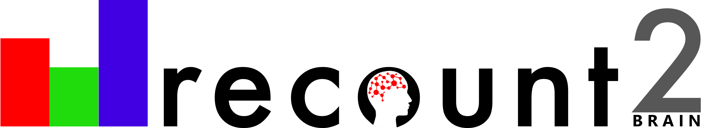

recount-brain: a curated repository of human brain RNA-seq datasets metadata
Leonardo Collado-Torres 6,*
@fellgernon
lcolladotor@gmail.com
Ashkaun Razmara1 Shannon E Ellis2 Dustin J Sokolowski3 Sean Davis4 Michael D Wilson3 Jeffrey Leek5 Andrew E Jaffe5,6
1 Frank H. Netter MD School of Medicine at Quinnipiac University, North Haven, CT
2 Department of Cognitive Science Department, University of California San Diego, La Jolla, CA
3 Department of Molecular Genetics, University of Toronto
4 Center for Cancer Research, National Cancer Institute, NIH
5 Department of Biostatistics, Johns Hopkins Bloomberg School of Public Health, Baltimore
6 Lieber Institute for Brain Development, Johns Hopkins Medical Campus, Baltimore
1 Introduction
- Uniformly-processed RNA-seq is available in
recount2(Collado-Torres et al. 2017) and other projects; - Sample metadata from SRA is inconsistent, thus re-using this public data is challenging;
- Metadata can be predicted from expression (Ellis et al. 2018) and mapped to ontologies (Bernstein, Doan, and Dewey 2017).
2 Methods
We identified SRA studies present in recount2 that had at least 4 samples with at least 70% of them were predicted to correspond to the brain using phenopredict (v0.0.03) (Ellis et al. 2018). Figure 6 of (Razmara et al. 2019) shows the reproducible curation workflow we followed that briefly involved: creating a list of metadata variables of interest, documenting which part of the paper/supplement the information came from, and any custom modifications. We merged recount-brain with GTEx and TCGA brain sample metadata and linked to controlled vocabulary terms for Brodmann region, tissue and disease.
3 Results
In total, there are 6,547 samples with metadata in recount-brain with 5,330 (81.4%) present in recount2 from 62 SRA studies, GTEx (n=1,409) and TCGA (n=707). The curated metadata can be interactively explored through jhubiostatistics.shinyapps.io/recount-brain/. Figure 3.1 exemplifies some of the metadata information available for these studies.
Figure 3.1: Overview of some recount-brain sample metadata variables
3.1 Example usage
Select studies or add the sample metadata to the expression data with recount::add_metadata() (Figure 3.2).
Figure 3.2: Access recount-brain using the recount Bioconductor package
As an example of how you can use recount-brain, we used studies with post mortem interval (PMI) information to assess whether expression of RNASE2 is associated with PMI. In studies present in recount-brain we did find an overall association as shown in Figure 3.3 in contrast to (Ferreira et al. 2018)’s findings. A sensitivity analysis releaved study variability which is why Ferreira et al likely did not observe this association.
Figure 3.3: Replicate findings from other studies using recount-brain
We used recount-brain to determine the consistency of gene variability across glioblastoma studies SRP027383 and SRP044668 as well as TCGA (Figure 3.4).
Figure 3.4: Assess consistency of gene variability across glioblastoma studies
4 Conclusions
recount-brain(Razmara et al. 2019) facilitates human brain RNA-seq analyses.recount-braincan be used for reproducing analyses, replicating findings and assessing cross-study variability.- Curation efforts are complementary to prediction efforts (Ellis et al. 2018) and automatic ontology mapping (Bernstein, Doan, and Dewey 2017).
- Our reproducible curation workflow can be adapted to curate more samples and other studies.
References
Bernstein, Matthew N., AnHai Doan, and Colin N. Dewey. 2017. “MetaSRA: Normalized Human Sample-Specific Metadata for the Sequence Read Archive.” Bioinformatics 33 (18): 2914–23. https://doi.org/10.1093/bioinformatics/btx334.
Collado-Torres, Leonardo, Abhinav Nellore, Kai Kammers, Shannon E. Ellis, Margaret A. Taub, Kasper D. Hansen, Andrew E. Jaffe, Ben Langmead, and Jeffrey T. Leek. 2017. “Reproducible RNA-Seq Analysis Using Recount2.” Nature Biotechnology 35 (4): 319–21. https://doi.org/10.1038/nbt.3838.
Ellis, Shannon E., Leonardo Collado-Torres, Andrew Jaffe, and Jeffrey T. Leek. 2018. “Improving the Value of Public RNA-Seq Expression Data by Phenotype Prediction.” Nucleic Acids Research 46 (9): e54–e54. https://doi.org/10.1093/nar/gky102.
Ferreira, Pedro G., Manuel Muñoz-Aguirre, Ferran Reverter, Caio P. Sá Godinho, Abel Sousa, Alicia Amadoz, Reza Sodaei, et al. 2018. “The Effects of Death and Post-Mortem Cold Ischemia on Human Tissue Transcriptomes.” Nature Communications 9 (1): 490. https://doi.org/10.1038/s41467-017-02772-x.
Razmara, Ashkaun, Shannon E. Ellis, Dustin J. Sokolowski, Sean Davis, Michael D. Wilson, Jeffrey T. Leek, Andrew E. Jaffe, and Leonardo Collado-Torres. 2019. “Recount-Brain: A Curated Repository of Human Brain RNA-Seq Datasets Metadata.” bioRxiv, April, 618025. https://doi.org/10.1101/618025.
 Analysis-ready human curated sample metadata for brain RNA-seq studies